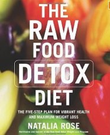
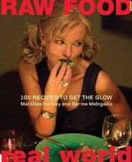
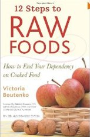
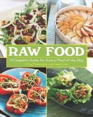

Resources
People BooksProvided below are resources meant to inspire and educate. In the people section the leading figures of the raw foods diet are referenced. Each person varies in their execution as a raw foodist. Find the right teacher for you. The Book resources provide a list of practical beginner style guides to raw foods.

Books
The Raw Food Detox Diet: The Five-Step Plan for Vibrant Health and Maximum Weight Loss"
Author Natalia Rose has written an excellent beginner's book for anybody looking to switch to a raw food life or simply looking to increase their health in a healthy tastey way. She talks slightly about cellular nutrition as a means of gaining or maintaining health. This book is practical for the beginnger who isn't looking for gourmet recipes and simply wants to get more from their food

Raw Food/ Real World: 100 recipes to get the glow
Authors Matthew Kenney and Sarma Melngailis designed this book to appeal to every person. The recipes provided range from simple blends on the go, to grand delicious gourmet food that your whole family will drool for.

12 Steps to Raw Foods
Author Victoria Boutenko wrote this book as a self-help styled book. Containing self-tests and questionnaires that help shine light on hidden eating patterns that undermine health. The book will explore the significant physical, psychological, and spiritual phases one may experience transitioning from cooked to raw foods.

Raw Food: A Complete Guide for Every Meal of the Day
Authors Erica Palmcrantz and Irmela Lilja wrote a "bible" for raw foods. Chapters explain eating raw foods as simple, inexpensive, and delicious. These two will show you how to properly sprout, wash, and maintain vegetables to maintain nutritional integrity and present plent of tastey recipes.
Back to top